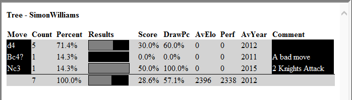
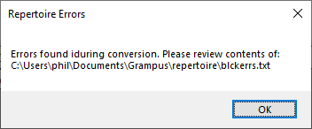

Using the Repertoire Feature
Grampus includes a feature to help creating and using opening repertoires.
This allows you to create two repertoires, one as White and one as Black.
How are they stored?
The repertoires are stored in the folder Documents\Grampus\repertoire. They consist of three elements:
- Grampus bases holding the moves called WhiteRep and BlackRep.
- The repertoire tree in JSON format in the files whte.json and blck.json.
- Text files holding a list of issues found in the repertoires, if any, called whteerrs.txt and blckerrs.txt.
Two small repertoires are provided in the installation.
The Repertoire menu
The repertoires can be displayed in the tree panel. To show them, you use the Show White and Show Black options. These options are also available as buttons on the toolbar.
To create the repertoire you just add games and moves to the relevant base and then update the repertoire using the Update White and Update Black options. If the update has issues, these will be added to the relevant errors file, so that you can review them and revise the games in the database.
Displaying the Repertoire
To display the repertoire first open a base and a tree. If you now select Show Black, the moves from the repertoire will be displayed in black cells. Any move assessments and comments will also be shown. For example:

If you select Show White, the moves from the repertoire will be displayed in white cells.
Editing the repertoire
You can edit the reportoire by opening the releavnt base and then edit or add games. For, example we might want to add a response to the Bc4 move shown in the tree above.
We can open the base and then add the Bc4 move and a suitable response and comments. If we then press Update Black, we will see an updated tree:

Using the errors file
The repertoire is intended to give your single preferred choice for any position. Thus the Black repertoire with more than one move for Black in any position will be treated as an error.
To investigate this I used the default repertoire and added 1...e5 in addition to the default single choice of 1...c6.
I then ran Update Black. An error was notified by this dialog:

If you then examine the contents of this file, it contains one line:
Duplicate move found for bdstr RNBQKBNRPPPP.PPP............P...................pppppppprnbqkbnr b with moves e5 and c6.